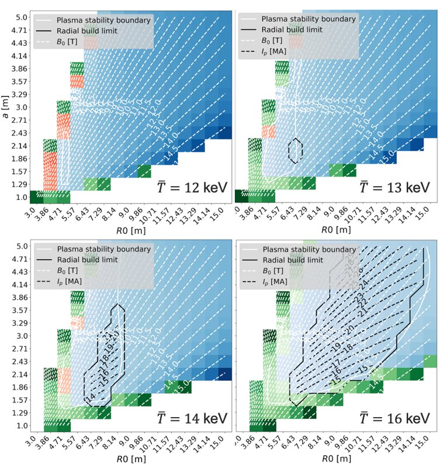

Module Tokamak · CEA Cadarache (IRFM) · février 2026 · projet en équipe de 4
Pré-dimensionnement de tokamak avec le code système D0FUS
Exploration de l'espace de conception (R0, a) d'un réacteur sous contraintes de stabilité MHD (limites de Greenwald, de Troyon et de kink) et d'encombrement radial.
- Influence de la température du plasma, du champ maximal, de la puissance de fusion et du facteur de confinement H.
- Comparaison des supraconducteurs NbTi, Nb3Sn et REBCO de 6 à 20 T : seul le REBCO reste faisable et stable à 20 T.
- Choix de l'acier des bobines (316L, N50H) et des configurations mécaniques bucking et wedging.